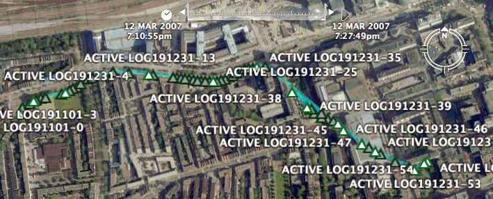

Although Garmin have not yet released OSX software for using your GPS with your Mac, there are various things that do work. This page tells you what you can do, and how to do it.
I am using a Garmin Venture Cx (firmware version 2.50), one of the newer low-end devices with a USB interface and colour screen. Everything that works for the Venture Cx may also work for the Legend Cx and Vista Cx, which are probably identical or near-identical hardware.
What works
The good news is that lots of things just work, using the USB interface and some open-source software.
How to download track logs
You can download track logs, simply by connecting the GPS as a USB Mass Storage device and copying the GPX file using the Finder.
- Put a MicroSD card in the GPS to store track logs
The Venture Cx does not come with a MicroSD card, so I borrowed a 64 Mb one from my mobile phone. I expect to replace this with a new 1 Gb MicroSD card for less than €20.
- On the GPS, select Main Menu » Tracks » Setup » Data Card Setup » Log track to data card
- On the GPS, select Main Menu » Tracks » On
- Go for a walk
- On the GPS, select Main Menu » Tracks » Save » Yes » OK
This saves the current track on the card.
- Connect the GPS to the Mac using a mini-USB cable
This seems to be a standard cable with a normal USB plug on the Mac end, and a USB Mini-B plug on the other end. The Venture Cx does not come with this cable, but I already had a spare one from a digital camera. You can probably get one for less than €10 in an electronics shop.
- On the GPS, select Main Menu » Setup » Interface
- On the GPS' Interface Setup screen, press Enter to select USB Mass Storage
This will mount the MicroSD card as a disk in Finder on the Mac.
- Copy the GPX file from the MicroSD card to the Mac
The track log file name includes is a date, so a file for 18 March 2007 would be 20070318.gpx.
This gives you a GPX file, which is an XML file that you can view in a text editor and convert to KML and view it in Google Earth, or Google maps. Here is an example file that I downloaded from my GPS: 20070312.gpx.
How to view a track log in Google Earth
You can convert a track log from the device to the KML format used by Google Earth and Google Maps, using GPSBabel+ or GPS Automator Actions. These are both front-ends to the cross-platform open-source GPSBabel command-line tool.
- On the GPSBabel download page, download and install the latest .dmg file.
- Start the GPSBabel+ application
- In the Quick GPSBabel window, in the Input Options section, select Use file, click the Select… button and select the GPX file from the GPS.
You can use the 20070312.gpx example from How to download track logs, above. After you select the file, the Input file type option changes to GPX XML.
- In the Output options section, select Use file, and select the Google Earth (Keyhole) Markup Language option.
- Click the Save File… button, choose a file to save and click OK.
After the file is successfully saved, GPSBabel should an alert with the message Processed fully.
- Download and install Google Earth
if you do not already have it.
- In the Finder, open the 20070312.kml file you saved in step 5.
The file opens in Google Earth, and is shown in the Places pane as Temporary Places » GPS Device » Track
- In Google Earth, at the top-right of the main window, click the play button to the right of the track's time series.
For some reason, the whole track is not initially shown, just the first point. To view the whole track log, drag the vertical time position cursor to reveal the whole time range:

A web-based alternative to using Google Earth is to view the KML file in Google Maps.
{kind=link}